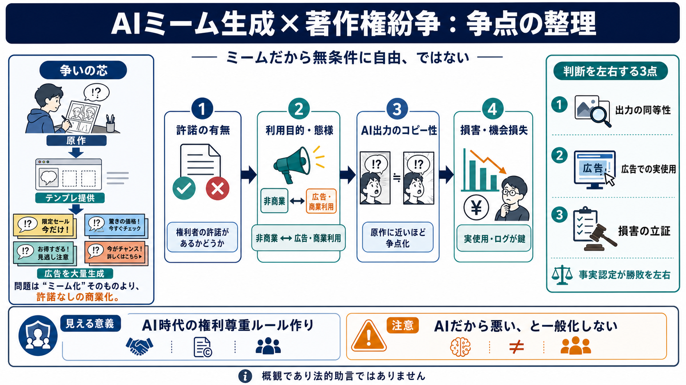

問題視される点 / Why
サブスクで広告を大量生成する用途が想定されること。

「ミームだから無条件に自由」ではなく、個別作品の権利が、商業的な利用態様で問題になり得る——その構図を記事内容ベースで整理します。
参照：フィリピンのデジタルクリエイター／漫画家エルマー・サフロル（“Superelmer”）が、AIミーム生成サービス側を提訴したという報道の要点です。
争点は「ミーム化したこと」そのものではなく、作者の許諾なく“広告制作のためのテンプレート”として提供・大量生成できる点にあります。
原告Superelmerは、自身の人気漫画「Running Away Balloon」がAIミームジェネレーター（Memes.ai / Memes AI Studio）で“テンプレート”として販売され、広告に使われていると主張しています。
ミームはコピー・改変されやすい文化ですが、商業的に利益化（広告制作のスケール）されると、公正利用（フェアユース）の見通しが変わり得ます。
※ここでは一般論ではなく、記事が強調した「広告用途としての商業化」が論点だという点を整理します。
記事では、原告が運営側の提示例だけではなく“実際の広告での使用”を十分に見られていない可能性が示され、ディスカバリーで利用状況を明らかにしようとしている色合いがあります。
AIが生成した画像・表現が、原作と同一または実質的に同等のコピーに近い場合、防御側の材料が弱くなり得る、と専門家が述べています。
専門家は、広告侵害の当事者（広告主側）ではなくミーム生成サービス自体を直接狙うのは大胆で、裁判所が一般化しすぎることを避け、慎重に検討する可能性があると示唆しています。
記事の整理に沿うと、中心は「許諾の有無」「利用目的・態様（特に広告の商業性）」「出力の性質（コピー性）」「損害（機会損失）を示せるか」です。
記事時点では、(1)実際の広告でどれだけ使われたか、(2)出力が原作とどの程度同一性を持つか、(3)被告の反論（ライセンス体系等）が十分に示されていないため、法的評価の確度が上がり切っていません。
ミームは燃えるほど広がる“素材”ですが、燃やす側が広告のエンジンになると、権利者の利益圏から外れるかが問われます（ミームだから例外、とはならない）。
本件は「AIだから悪い」ではなく「許可なく商業化するやり方」への問題提起として読め、ただし勝敗は出力内容・利用態様・経済的影響の事実認定に左右されます。
この種の紛争は、次の3点が揃うほど判断が固まりやすくなります。
※本デッキは、ユーザー提供の要約・見解に基づく概観です（法的助言ではありません）。
No references found